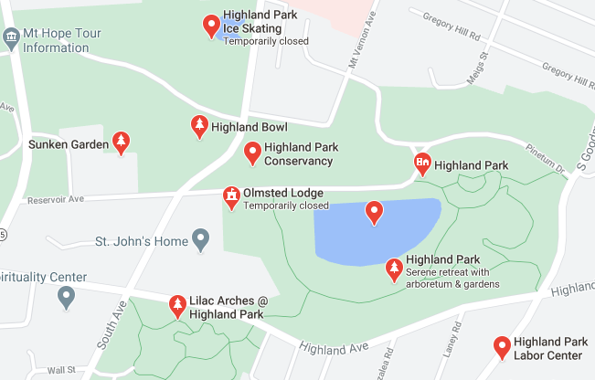

Sometimes there are days when it does the mind and soul well to slow down, and smell the flowers.Highland park is an excellent place to do so. With a lilac festival held within its borders every year, the fragrance does you the favor of filling the air so that there's no need to stand still. Just a leisurely stroll through the flowers, with the distant lilt of music, is sure to take every worry away.
Even in winter, Highland park is sure to delight, providing a ice skating ring for all who wish to glide through the colder seasons.